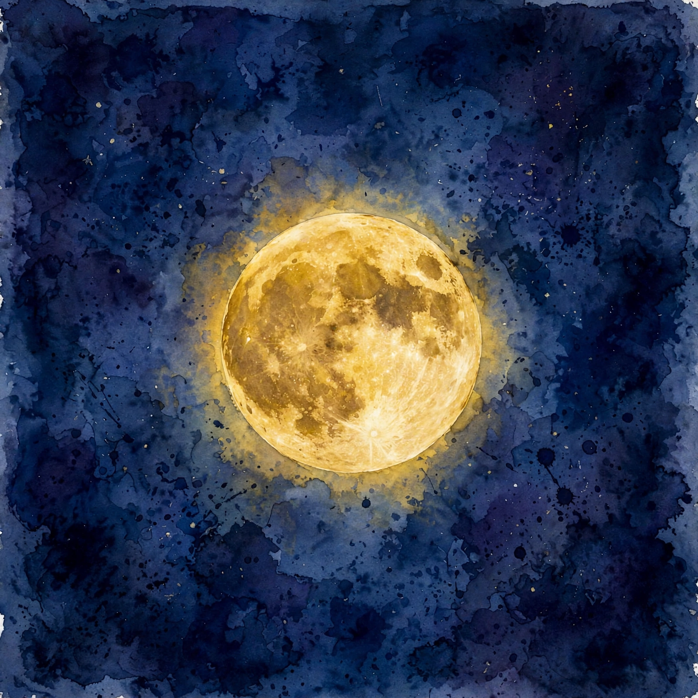
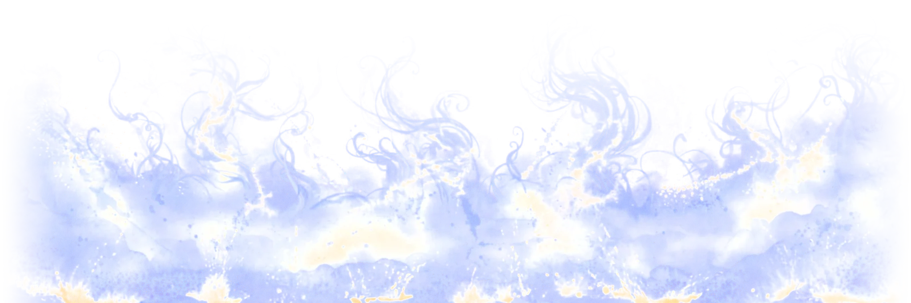
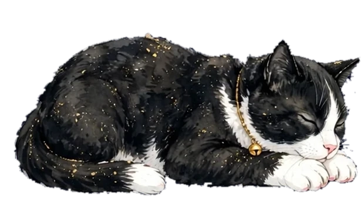
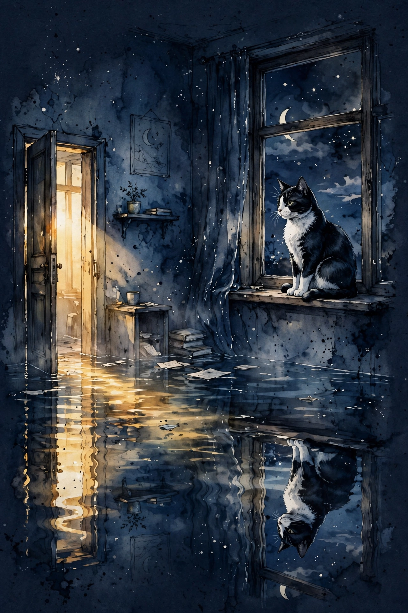

Coffee will walk you to the house at the edge of sleep.
Free to start: a dream reading every night, sleep stories and your own dream passport.


✦✦✦✦
☾

zzz
Reading your dream…
Dreameri
Settings
Your account
Your plan
Free version
Free
Your current plan
Dream readings, every night
Sleep stories up to 10 minutes
Two voices — Nova & Onyx
Core themes & moods
Dream Memory — last 3 days only
Bring your own API key (BYOK)
Stories of 20, 30 & 45 minutes
All six voices
Locked themes & moods
Full Dream Memory — every dream kept
Full version
Every lock opens
Sleep stories up to 45 minutes
All six voices
Every theme — Adventure, Romance, Mystery, Mythic, Historical & more
Every mood — Dreamy, Tender, Nostalgic, Quietly Brave & more
Every story length
Every reading’s deeper part, included — no per-reading fee
Dream Memory — every dream, kept & gathered
Language
API · Bring your own key (BYOK)
Use your own OpenAI key
Bring your own key (BYOK) — readings, scenes, sleep stories, story voices and voice transcription run on your own OpenAI account instead of the built-in cloud, with no daily cap from us.
Your key never leaves your device.It is saved only in this browser, on this device, and is sent only to OpenAI (api.openai.com) when you make something. It is never sent to Dreameri's servers, and removing it here erases it from this device completely.
Not connected — everything runs on the built-in cloud, as before.
No key yet? Create one at platform.openai.com under API keys, add a little credit, then paste it here. OpenAI bills your key directly — a reading costs a fraction of a cent; a spoken story, a few cents.
Tell Coffee your dream
Speak it into the fire. Where you were, who was there, what happened, how it felt.
Tap to begin · tap again when you’re done
What the fire heard
How did you wake up feeling?
Read it through
☾Coffee asks
0 / 20 wordsAt least 20 words — more detail, a fuller reading
How did you wake up feeling?
Every reading opens with one bright sign and one warning sign — both free, in full. The deeper part of the reading stays locked, until you want it.
✦✦✦✦
☾
zzz
Reading your dream…
Listening to your dream

☾ Dreameri
Mon · Nov 9
Dream Decipher
The dream, moment by moment4 moments
One bright sign · One warning sign
The reading
The deeper part
Unlock this reading — $1One-time, for this dream only. No subscription needed.
“
One line to remember
Dreameri✦ ✦ ☾
Dream Journey
What your dreams keep returning to
Every dream you read here is gathered below — the signs, places, people and scenes that come back, dream after dream. The more dreams you bring, the clearer the pattern, and the better it knows you. This is your Dream Memory: on the free version it keeps only the last 3 days; the full version keeps every dream.
No dreams read yet. Read your first dream above, and its signs, places, people and scenes will start gathering here.
Make a daydream
Manifest your dream. Set the scene — we’ll develop your sleep story.
0 / 600
Story direction
Choose the broad strokes for your sleep story now — a theme, a mood, a place, how long it runs, and who lives in it — and they will be used the moment you tap create. Pick a setting from the scenes below, or describe a place of your own. The small details are still the story’s to dream, and yours to imagine.
Free
You are on the free version. Stories run up to 10 minutes, with two voices — Nova and Onyx — and the core themes and moods. Dream Memory keeps only the last 3 days on Free. Options with a lock belong to the full version — tap any locked option to see the plans.
Theme · genre
Mood · how the story feels
Setting · the scene the story lives in
Length · how long the story runs — free up to 10 min
Characters · who's in the story — pick any, they can be together
Not either/or — tap more than one. For example: you and people you name, together in the same story.
Weave in my past dreams
Your scene
Your scene will appear here.Write a wish and tap Create.
Sleep story
Listen
Voice · NovaNo story yet.0:00 / 0:00
Voice
Tap a voice — it just says hello.
Free version: two voices — Nova and Onyx. The other voices belong to the full version.
Speed
Sleep timer
Dreameri · Plans
Free, and the full version
Everything with a lock belongs to the full version. Here is what each one holds.
Just this one reading? $1
Unlock the deeper part of a single reading — its relationship signs, its warning read in full, and when its sign tends to return. One-time, for that dream only. No subscription, nothing else opens.
Free
Your current plan
Dream readings, every night
Sleep stories up to 10 minutes
Two voices — Nova & Onyx
Core themes & moods
Dream Memory — last 3 days only
Stories of 20, 30 & 45 minutes
All six voices
Locked themes & moods
Each reading’s deeper part — $1 per reading
Full Dream Memory — every dream kept
Full version
Every lock opens
Sleep stories up to 45 minutes
All six voices
Every theme — Adventure, Romance, Mystery, Mythic, Historical & more
Every mood — Dreamy, Tender, Nostalgic, Quietly Brave & more
Every story length
Every reading’s deeper part, included — no per-reading fee
Dream Memory — every dream, kept & gathered
Subscriptions aren’t open yet. When they open, every locked option unlocks at once — nothing new to set up.